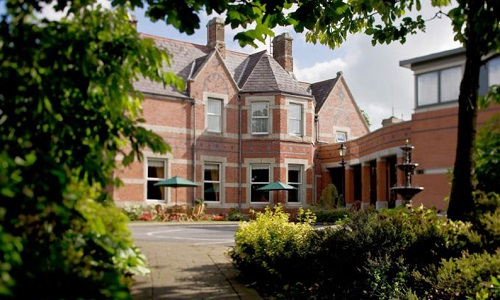

Guesthouses
Arthur’s Rest B&B
A warm welcome awaits you in this family run spacious country home where you will find the highest standards of hospitality, comfort and cleanliness. All of the tastefully decorated bedrooms are en-suite. Located on the R733, close to magnificent heritage attractions and sandy beaches. Self-catering also available. Children welcome.
- Arthurstown, County Wexford
- Tel: 051 389192
- arthursrest@eircom.net
- www.arthursrest.com
Hook Head Bed and Breakfast
Hook Head Bed and Breakfast is located on the Hook Peninsula, Co. Wexford and is an ideal setting for those looking for a warm Irish welcome. The atmosphere is relaxed and inviting. The bed and breakfast is spacious, tranquil, luxuriously decorated and offers the opportunity to relax and unwind. Anne the hostess, will spoil you with her delicious home baking and delightful Irish breakfast. The surrounding area is renowned for its outstanding natural beauty, located just a short walk to the beautiful Dollar Bay and Booley Bay beaches. The accommodation is a short drive from The Hook Lighthouse, Loftus Hall, Tintern Abbey, and Fethard on Sea village. Please contact Anne for rates for families, groups, solo guests and any other queries.
- Broomhill, Fethard-on-Sea, County Wexford
- Tel: 086 0897915
- hookheadbandb@gmail.com
- www.airbnb.ie/rooms/3176699
Hotels
Dunbrody House Hotel
Dunbrody Country House Hotel Ireland a luxury boutique hotel in Co. Wexford. Located on the dramatic Hook Peninsula on Ireland’s south coast, Dunbrody House is owned and operated by husband and wife team Kevin & Catherine Dundon. This luxury hotel in Ireland reflects their joint passion for excellence in all areas - fine food and a friendly, relaxed service combined with luxury accommodation all within the centuries-old walls of this beautiful Georgian property.
- Arthurstown, County Wexford.
- Tel: 051 389600
- info@dunbrodyhouse.com
- www.dunbrodyhouse.com
Brandon House Hotel & Spa
The Four Star Brandon House Hotel and Solas Croí Eco Spa is a Country Manor House conveniently situated on the N25 in historical New Ross, nestled between Wexford and Waterford. With easy access to some of the best beaches Ireland has to offer and a wide selection of child friendly activities including The Dunbrody Famine Ship, JFK Arboretum and Hook Lighthouse. The Brandon House Hotel has 78 Bedrooms, 4 dedicated Conference rooms, including the Kennedy Suite which can accommodate up to 300 people, and is an ideal location for your Wedding Venue in the Southeast of Ireland.
- New Ross, County Wexford.
- Tel: 051 421703
- info@brandonhousehotel.ie
- www.brandonhousehotel.ie